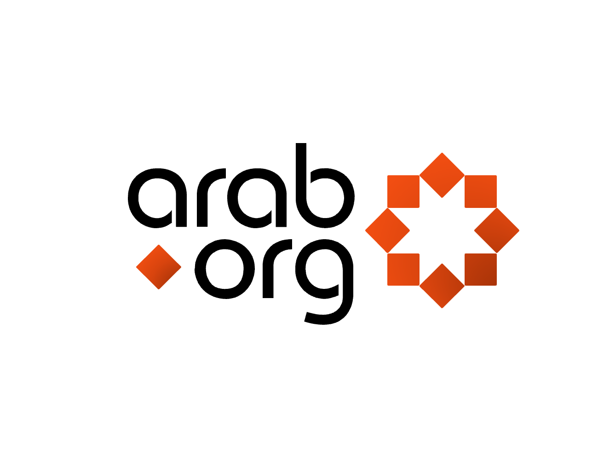
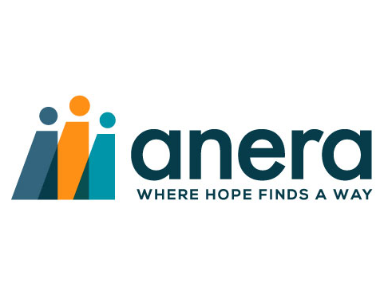
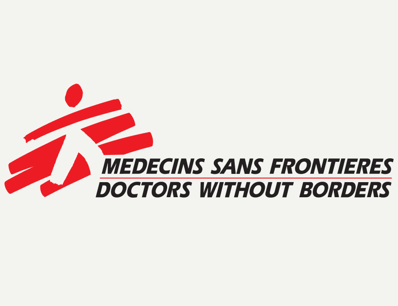
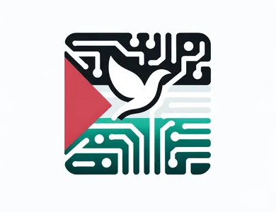
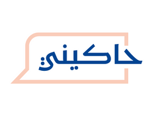
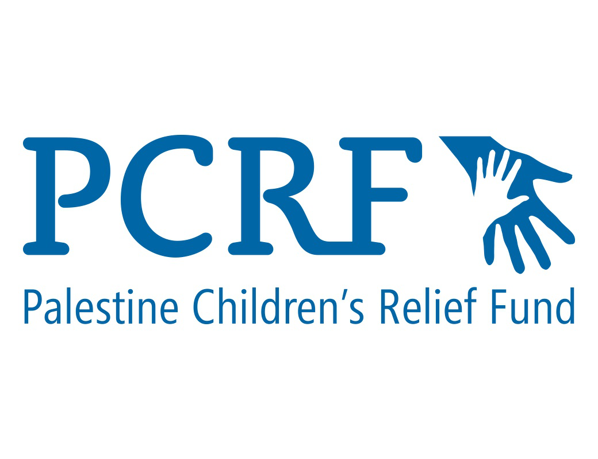
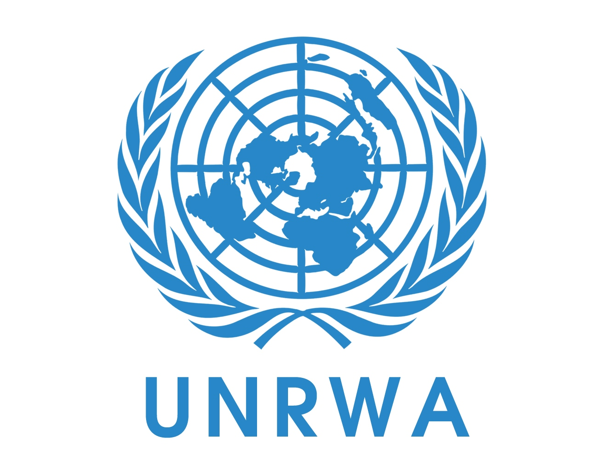

Donate
This is the most direct way you can help the people in Palestine, in particular in Gaza. While we only have eight organizations listed below there are many more you can donate to. It is recommended, if you intend to donate to any organization, look in on what that organization is actually doing and how they are helping. Each section's image will be a link to the website, alongside a text link to each website at the bottom of each section. Organizations are listed Alphabetically (with exception to Arab.org).
All links and donations are not made to Henrico for Palestine and any and all websites provided will lead to donates directly to their respective orgs. Under no instance will Henrico for Palestine handle donations or deal with moving funds along to other organizations.
Arab.org
Arab.org, based in Lebanon, is an essential for everyone. They are a non-profit, and in order to help all you do is click on a few buttons, and that is a donation. Each click helps towards helping the people of Palestine, and you can do them daily. They cost nothing, and give to people something. Alongside this they have an NGO portal, which can be used to find other organizations to donate to.
Arena
Though if you are able to give more than a click, there is other options. Based in Washington, DC, Anera is a primary option out of these, aid going towards ensuring shipping can continue into Gaza, and the donation of vital medical supplies. Doing this can help bring much needed medical relief towards the people of Palestine.
Baitulmaal
However, if you want a more direct way of knowing what you Donate, Baitulmaal is another great organization to donate to. They have a small list of packages ($30 to $325, more expensive) which you can donate money to cover. Hygiene, food, medical, and a full package can be donated towards. This is a great avenue towards helping the people of Palestine.
Doctors Without Borders
Another great way to donate is giving money towards medical relief. Doctors Without Borders, based throughout Europe, West, and Central Africa, is a great organization to donate for this, to get medical aid into the hands of Palestinians. Alongside physical aid they assist with psychological aid in the region.
eSims for Gaza
As the occupation continues and Palestinian infrastructure continues to be ruined, internet access is limited and prevents reporting about what is ongoing in Gaza, and those within Gaza from contacting the outside world. eSims are the way you can give the people of Palestine access to the internet, to show what is happening, and to be able to contact loved ones outside of Gaza.
Hakini
Hakini, based in Palestine itself, is an organization focused on mental health. This is a great way to get money towards mental health services in Gaza, which (among many things) it is in dire need of. They have a set goal of $100,000 and have started to get towards that goal. Donating could push them past it, and be a massive help to the people of Gaza. They primarily focus on workshops, alongside counselling sessions over the phone and referral to other organizations who can help.
Palestinian Children's Relief Fund
The Palestinian Children's Relief Fund (PCRF) is one of the best ways to directly help the children of Gaza. They focus on providing free medical care to children in need, however also work in providing food aid, aid in hygiene, and assisting orphans in need. Every dollar donated to them will help the children of Gaza in need.
United Nations Relief and Works Agency
And last but not least, UNRWA. Out of the organizations here they might be one of the most important, and are in absolutely dire need of donations. They have the most reach and the most ability to help, and need every penny they can get to ensure they can continue to function. They help with all forms of aid, food, medical, social security for refugees, education, you name it. The ongoing crisis in Gaza has stretched them thin, and they need as much financial assistance as possible in order to continue to do all of these things.